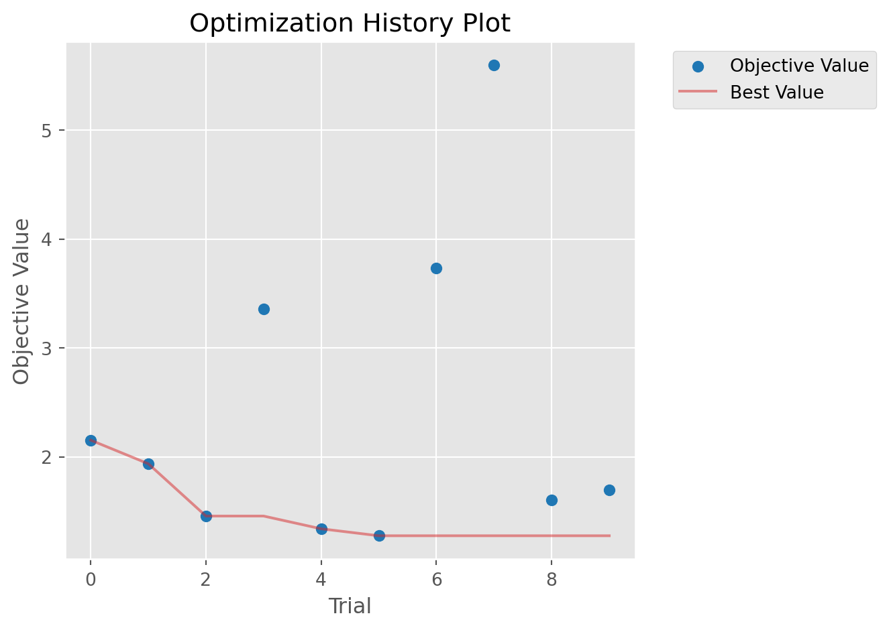

STIsim provides a streamlined calibration framework designed for the practical realities of fitting HIV and STI models to data. It’s built on Starsim’s calibration tools and Optuna, but makes a number of opinionated choices so you can go from data to calibrated model with minimal boilerplate.
How it works (and what choices we’ve made)
STIsim’s calibration uses approximate Bayesian computation (ABC) – the idea is to find parameters that minimize the difference between model output and observed data. For each trial, Optuna proposes a set of parameters, the model runs, and we compute a goodness-of-fit (GOF) score. After many trials, the best-scoring parameter sets approximate the posterior distribution.
GOF metric: Normalized absolute error between model and data, summed across all targets. You can weight targets differently (e.g., weight syphilis prevalence 10x higher than HIV incidence).
Parameter routing: Dot notation ('hiv.beta_m2f') automatically finds and sets the right module parameter – no custom build_fn needed.
Data format: A simple CSV/DataFrame with time (year) and columns matching sim result names.
This approach has been used extensively in HPVsim and Covasim and tends to perform well for STI/HIV fitting. But it’s not the only approach:
Want a different GOF metric? Pass a custom eval_fn to sti.Calibration (e.g., mean squared error, log-likelihood).
Want statistically rigorous components? Use Starsim’s CalibComponent system directly (Normal, BetaBinomial, etc.) – see the Starsim calibration tutorial.
Want full Bayesian inference? Starsim supports sampling-importance resampling – see the Starsim calibration tutorial.
The rest of this tutorial covers the streamlined STIsim workflow.
Setup: generate synthetic data
To demonstrate calibration without external data files, we’ll generate synthetic targets from a simulation with known “true” parameters. In practice, you’d load survey data (e.g., DHS, PHIA) instead.
import numpy as npimport pandas as pdimport sciris as scimport starsim as ssimport stisim as sti# "True" parameters we'll try to recovertrue_beta =0.08true_condom =0.6# Create and run a sim with the true parameterstrue_sim = sti.Sim( diseases=sti.Gonorrhea(beta_m2f=true_beta, eff_condom=true_condom), n_agents=2000, start=2010, stop=2030,)true_sim.run(verbose=0)# Extract yearly prevalence and incidence as our "data"df = true_sim.to_df(resample='year', use_years=True, sep='.')data = df[['timevec', 'ng.prevalence', 'ng.new_infections']].dropna()data = data.rename(columns={'timevec': 'time'})data['time'] = data['time'].astype(int)print(f'Generated {len(data)} data points')data.head()
Initializing sim with 2000 agents
Generated 21 data points
time
ng.prevalence
ng.new_infections
0
2010
0.007965
45.0
1
2011
0.002247
6.0
2
2012
0.000000
0.0
3
2013
0.000000
0.0
4
2014
0.000000
0.0
Defining calibration parameters
STIsim uses dot notation to route parameters to the right module: 'module_name.par_name'. The module name is whatever sim.get_module() would find – typically the disease name (ng, hiv, syph), network name (structuredsexual), connector name (hiv_syph), or intervention name (art, fsw_testing).
You can write parameters in two equivalent formats:
# Nested format -- group parameters by module (Pythonic, uses keyword syntax)calib_pars =dict( ng=dict( beta_m2f=dict(low=0.03, high=0.15, guess=0.06), eff_condom=dict(low=0.3, high=0.9, guess=0.5), ),)# Flat format -- equivalent, uses string keyscalib_pars_flat = {'ng.beta_m2f': dict(low=0.03, high=0.15, guess=0.06),'ng.eff_condom': dict(low=0.3, high=0.9, guess=0.5),}# Both produce the same result after flatteningprint(sti.flatten_calib_pars(calib_pars))print(calib_pars_flat)
Each parameter spec requires low and high bounds. The optional guess is used as the starting point for the “before” comparison in check_fit().
The nested format is particularly convenient when calibrating multiple modules – parameters are visually grouped:
# Multi-module example (not run here -- just to show the pattern)multi_pars =dict( hiv=dict( beta_m2f=dict(low=0.002, high=0.014, guess=0.006), eff_condom=dict(low=0.5, high=0.9, guess=0.75), ), structuredsexual=dict( prop_f0=dict(low=0.55, high=0.9, guess=0.7), m1_conc=dict(low=0.05, high=0.3, guess=0.15), ), syph=dict( beta_m2f=dict(low=0.15, high=0.35, guess=0.2), ),)print(f'{len(sti.flatten_calib_pars(multi_pars))} parameters across 3 modules')
5 parameters across 3 modules
Running a calibration
Create a Calibration with the sim, parameters, and data. No custom build_fn is needed – STIsim’s default automatically routes parameters using dot notation.
[I 2026-05-16 04:41:37,948] Trial 0 finished with value: 2.1524364981825483 and parameters: {'ng.beta_m2f': 0.10727895604407983, 'ng.eff_condom': 0.3116622426837969, 'rand_seed': 343498}. Best is trial 0 with value: 2.1524364981825483.
[I 2026-05-16 04:41:40,331] Trial 1 finished with value: 1.9357802454658675 and parameters: {'ng.beta_m2f': 0.03525668612434059, 'ng.eff_condom': 0.6105582964703973, 'rand_seed': 83592}. Best is trial 1 with value: 1.9357802454658675.
[I 2026-05-16 04:41:42,485] Trial 2 finished with value: 1.4552753798271385 and parameters: {'ng.beta_m2f': 0.034334403089156425, 'ng.eff_condom': 0.8886775299958682, 'rand_seed': 886560}. Best is trial 2 with value: 1.4552753798271385.
[I 2026-05-16 04:41:44,589] Trial 3 finished with value: 3.3563009589780655 and parameters: {'ng.beta_m2f': 0.07917827689731079, 'ng.eff_condom': 0.38437799816230633, 'rand_seed': 804637}. Best is trial 2 with value: 1.4552753798271385.
[I 2026-05-16 04:41:46,678] Trial 4 finished with value: 1.3381383733008896 and parameters: {'ng.beta_m2f': 0.08575179043980669, 'ng.eff_condom': 0.43932114820944035, 'rand_seed': 309919}. Best is trial 4 with value: 1.3381383733008896.
[I 2026-05-16 04:41:48,834] Trial 5 finished with value: 1.2742271927684805 and parameters: {'ng.beta_m2f': 0.11023619620131068, 'ng.eff_condom': 0.3344359208981349, 'rand_seed': 711639}. Best is trial 5 with value: 1.2742271927684805.
[I 2026-05-16 04:41:51,043] Trial 6 finished with value: 3.734221625774409 and parameters: {'ng.beta_m2f': 0.1234034049986205, 'ng.eff_condom': 0.7661720027016773, 'rand_seed': 4857}. Best is trial 5 with value: 1.2742271927684805.
[I 2026-05-16 04:41:53,206] Trial 7 finished with value: 5.595974667660517 and parameters: {'ng.beta_m2f': 0.06326802644197996, 'ng.eff_condom': 0.8004468427095381, 'rand_seed': 580215}. Best is trial 5 with value: 1.2742271927684805.
[I 2026-05-16 04:41:55,357] Trial 8 finished with value: 1.6008487346269076 and parameters: {'ng.beta_m2f': 0.12353291662232835, 'ng.eff_condom': 0.6017374509385995, 'rand_seed': 370966}. Best is trial 5 with value: 1.2742271927684805.
[I 2026-05-16 04:41:57,461] Trial 9 finished with value: 1.6949256135264172 and parameters: {'ng.beta_m2f': 0.09764540391455394, 'ng.eff_condom': 0.8641146350313529, 'rand_seed': 983245}. Best is trial 5 with value: 1.2742271927684805.
# Optuna diagnostics: optimization history and parameter importancecalib.plot_optuna(['plot_optimization_history', 'plot_param_importances'])
Could not run plot_param_importances: Tried to import 'sklearn' but failed. Please make sure that the package is installed correctly to use this feature. Actual error: No module named 'sklearn'.
/opt/hostedtoolcache/Python/3.13.13/x64/lib/python3.13/site-packages/starsim/calibration.py:444: ExperimentalWarning: optuna.visualization.matplotlib._optimization_history.plot_optimization_history is experimental (supported from v2.2.0). The interface can change in the future.
fig = getattr(vis, method)(self.study)
/opt/hostedtoolcache/Python/3.13.13/x64/lib/python3.13/site-packages/starsim/calibration.py:444: ExperimentalWarning: optuna.visualization.matplotlib._param_importances.plot_param_importances is experimental (supported from v2.2.0). The interface can change in the future.
fig = getattr(vis, method)(self.study)

With only 10 trials and 500 agents, recovery won’t be perfect. In practice, you’d use 1000-2000 trials with 5000-10000 agents.
Extracting calibrated parameters
After calibration, use get_pars() to extract the top parameter sets as flat dicts ready to feed back into a sim:
# Get top 3 parameter sets (sorted by mismatch)par_sets = calib.get_pars(n=3)for i, pars inenumerate(par_sets):print(f'Set {i}: {pars}')
Set 0: {'ng.beta_m2f': 0.11023619620131068, 'ng.eff_condom': 0.3344359208981349}
Set 1: {'ng.beta_m2f': 0.08575179043980669, 'ng.eff_condom': 0.43932114820944035}
Set 2: {'ng.beta_m2f': 0.034334403089156425, 'ng.eff_condom': 0.8886775299958682}
You can also access the full results DataFrame via calib.df, which includes all parameters plus the mismatch value for every trial.
Running calibrated sims with make_calib_sims
The most common post-calibration task is running the top N parameter sets to generate results with uncertainty. make_calib_sims() handles this in one call:
# Run top 3 parameter setsmsim = sti.make_calib_sims(calib=calib, n_parsets=3, verbose=-1)print(f'Ran {len(msim.sims)} simulations')print(f'Each sim has par_idx: {[s.par_idx for s in msim.sims]}')
Initializing sim "Sim 2" with 500 agents
Initializing sim "Sim 0" with 500 agents
Initializing sim "Sim 1" with 500 agents
Ran 3 simulations
Each sim has par_idx: [0, 1, 2]
You can also pass calibration parameters directly – useful when loading saved results:
# From a list of parameter dictsmsim = sti.make_calib_sims( calib_pars=par_sets, sim=sti.Sim(diseases=sti.Gonorrhea(), n_agents=500, start=2010, stop=2030, verbose=-1), verbose=-1,)# From a DataFrame (like calib.df)msim = sti.make_calib_sims( calib_pars=calib.df, sim=sti.Sim(diseases=sti.Gonorrhea(), n_agents=500, start=2010, stop=2030, verbose=-1), n_parsets=3, verbose=-1,)
Initializing sim "Sim 1" with 500 agents
Initializing sim "Sim 0" with 500 agents
Initializing sim "Sim 2" with 500 agents
Initializing sim "Sim 1" with 500 agents
Initializing sim "Sim 0" with 500 agents
Initializing sim "Sim 2" with 500 agents
Filtering with check_fn
Some parameter combinations may produce epidemiologically implausible results (e.g., disease die-out). Pass a check_fn to filter:
def check_ng_alive(sim):"""Reject sims where gonorrhea died out."""returnfloat(sim.results.ng.new_infections[-12:].sum()) >0msim = sti.make_calib_sims( calib=calib, n_parsets=3, check_fn=check_ng_alive, verbose=-1,)print(f'Kept {len(msim.sims)} sims after filtering')
Initializing sim "Sim 1" with 500 agents
Initializing sim "Sim 0" with 500 agents
Initializing sim "Sim 2" with 500 agents
Dropped 3/3 sims via check_fn
Kept 0 sims after filtering
Multiple seeds per parameter set
For stochastic robustness, run each parameter set with multiple random seeds. When combined with check_fn, only the first surviving seed per parameter set is kept:
msim = sti.make_calib_sims( calib=calib, n_parsets=3, seeds_per_par=2, check_fn=check_ng_alive, verbose=-1,)print(f'Kept {len(msim.sims)} sims (1 per par set, best surviving seed)')
Initializing sim "Sim 0" with 500 agents
Initializing sim "Sim 1" with 500 agents
Initializing sim "Sim 2" with 500 agents
Initializing sim "Sim 3" with 500 agents
Initializing sim "Sim 4" with 500 agents
Initializing sim "Sim 5" with 500 agents
Dropped 6/6 sims via check_fn
Kept 0 sims (1 per par set, best surviving seed)
Saving and loading
After calibration, use calib.save() to save the calibration object and parameter DataFrame. This handles shrinking (keeping only the top results to reduce file size) automatically:
# Save with shrinking (keeps top 10% by default)calib.save('tutorial_output/my_calib.obj')# Load back and useloaded = sc.load('tutorial_output/my_calib.obj')print(f'Loaded calibration with {len(loaded.df)} parameter sets')
Saved calibration to tutorial_output/my_calib.obj
Saved parameters to tutorial_output/my_calib_pars.df
Loaded calibration with 10 parameter sets
Fitting to any target: if you can measure it, you can fit to it
The key idea behind STIsim’s calibration is simple: any result that appears in sim.to_df() can be a calibration target. You just need to include a column with the same name in your data file.
Built-in disease results (prevalence, incidence, etc.) are always available. But what if you need something custom – say, HIV-syphilis coinfection prevalence among adolescent girls? Any module (analyzers, interventions, connectors, etc.) can define custom results using define_results – see Custom results for the full explanation. Add the result to your sim, add a matching column to your data, and the calibration fits to it automatically.
Here’s an example using an analyzer:
class CoinfectionPrev(ss.Analyzer):"""Measure HIV-syphilis coinfection prevalence among 15-24 year old females."""def init_pre(self, sim):super().init_pre(sim)self.define_results( ss.Result('coinf_prev_f_15_24', dtype=float, scale=False, label='Coinfection prev (F 15-24)'), )def step(self): ppl =self.sim.people # Get the people object target = ppl.female & (ppl.age >=15) & (ppl.age <25) # Boolean mask: alive females aged 15-24 n_target = target.count() # Count how many matchif n_target >0: hiv =self.sim.diseases.hiv.infected # Boolean: who has HIV syph =self.sim.diseases.syph.infected # Boolean: who has syphilis has_both = hiv & syph & target # Intersection: coinfected in target groupself.results['coinf_prev_f_15_24'][self.ti] = has_both.count() / n_target # Store as prevalence
Now include this analyzer when creating your sim, and add the corresponding column to your data file:
# Add the analyzer to your simsim = make_sim(analyzers=[CoinfectionPrev()])# Your data CSV just needs a matching column:## time, hiv.prevalence, syph.active_prevalence, coinfectionprev.coinf_prev_f_15_24# 2016, 0.12, 0.03, 0.005# 2020, 0.11, 0.025, 0.004
The column name follows the same dot notation: analyzer_name.result_name. When the calibration runs, it will automatically compare the model’s coinfection prevalence against your data, alongside the other targets. No changes to the calibration code are needed – just add the column to the data and the analyzer to the sim.
This pattern works for any custom quantity: age-specific prevalence, risk-group-stratified incidence, treatment coverage by pathway, etc. If you can compute it in an analyzer, you can fit to it.
Data format and weights
The calibration expects a DataFrame (or CSV) with a time column (integer years) and columns matching simulation result names:
time
hiv.prevalence
syph.active_prevalence
hiv.n_on_art
2010
0.12
0.03
50000
2015
0.11
0.025
120000
2020
0.098
0.02
180000
Missing years are fine – the calibration only compares at timepoints where data exists. To see what result names are available, run sim.to_df().columns.
Not all targets are equally informative. Use weights to tell the calibration which data points matter most – for example, if you have high-quality survey data for syphilis but only routine program data for HIV:
weights = {'hiv.prevalence': 2.0, # Routine data -- moderate weight'syph.active_prevalence': 10.0, # PHIA survey -- high weight'hiv.n_on_art': 1.0, # Program data -- default weight}
Typical production workflow
A complete calibration analysis typically has three scripts:
# 2. run_msim.py -- run top parameter sets with full resultspars_df = sc.load('results/calib_pars.df')msim = sti.make_calib_sims( calib_pars=pars_df, sim=make_sim(), n_parsets=200,)